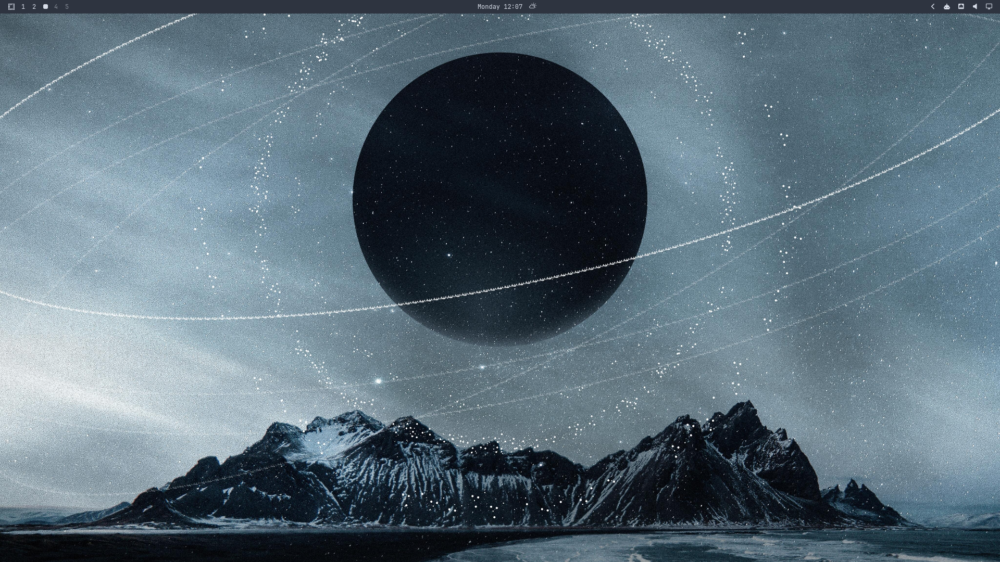
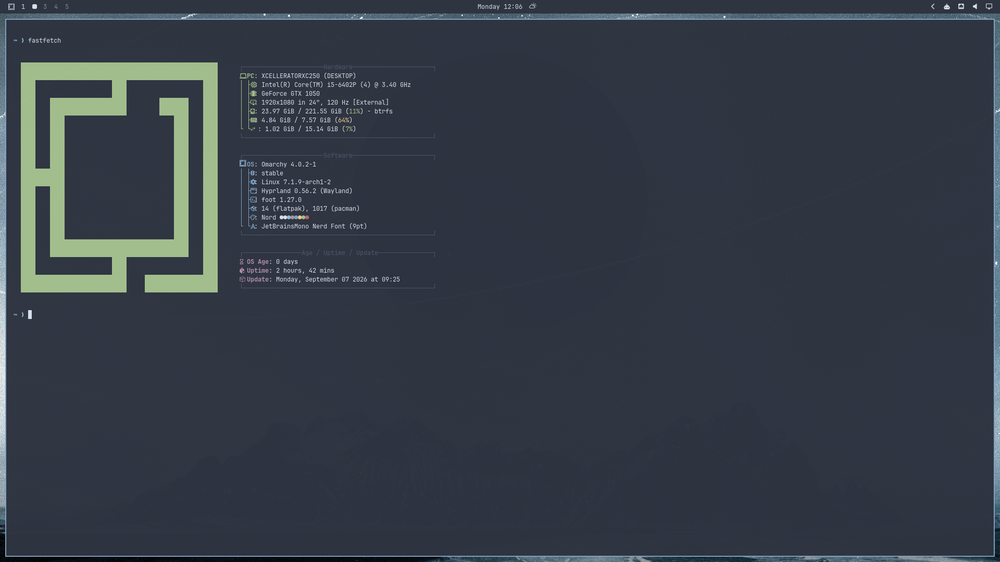

Merhaba, ben
Teknolojiye, açık kaynak dünyasına, sistem yapılandırmalarına ve yeni nesil yazılımlara tutkuyla bağlı biriyim. Yeni teknolojileri keşfetmeyi, projeler üretmeyi ve dijital dünyada çözümler geliştirmeyi seviyorum.
<Yetenekler />
Teknolojinin farklı dallarında edindiğim deneyimler
GNU/Linux yapılandırmaları ve sunucu yönetimi üzerine yoğunlaşıyorum.
Modern web teknolojileri ve programlama dilleriyle projeler üretiyorum.
Microcontroller projeleri ile ESP32, Arduino ve Raspberry Pi üzerinde uygulamalar geliştiriyorum.
Temel ağ analizi, güvenlik araçları ve DNS sistemleri konularında bilgi sahibiyim.
<Projeler />
Geliştirdiğim ve üzerinde çalıştığım açık kaynak projeler
ESP32 tabanlı kablosuz ağ tarayıcı. 0.96" OLED ekran üzerinde WiFi ağlarını tarar, sinyal gücünü gösterir. BOOT butonu ile tek tuşla menü navigasyonu, otomatik ivmelenmeli scroll ve captive portal desteği sunar.
CachyOS kurulumundan sonra yapılması gereken temel ayarlar ve optimizasyonlar. AUR, Flathub, Zapret, Fastfetch ve gaming kurulumları için adım adım rehber.
CachyOS için özel olarak tasarlanmış fastfetch yapılandırması. Renkli logo, özelleştirilmiş düzen ve terminalde şık sistem bilgisi gösterimi. Tek dosya ile kurulabilir.
PC'nin CPU, RAM ve GPU değerlerini gösteren küçük bir izleyici projesi. ESP32 + OLED (SSD1306 128x64) üzerinde gerçek zamanlı olarak donanım verilerini çubuk grafiklerle gösterir.
<GitHub />
Son 12 aylık katkılarım ve commit geçmişim
-
Repo
-
Toplam Star
-
Takipçi
<Masaüstü />
Çalışma ortamım ve masaüstü düzenim


<İletişim />